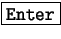

Para quienes poseen conocimiento de otros lenguajes de programación, el signo «punto y coma» (;) es utilizado frecuentemente como separador o terminador de sentencias. En bash no es necesario y puede ser reemplazado por . Es común encontrar una línea de este tipo:
# comando1 ; comando2 (ejecución de comando1 seguido de comando2)
es equivalente a:
# comando1 (ejecución de comando1) # comando2 (ejecución de comando2)
En el primer ejemplo con una sola línea se ejecutan ambos comandos. Es muy buen ejemplo cuando se quiere encadenar tareas que consumen mucho tiempo y tienen que ser seguidas.
Hay que tener presente que no se ejecutan en paralelo. Recién cuando termina de ejecutarse comando1 empieza a ejecutarse comando2.